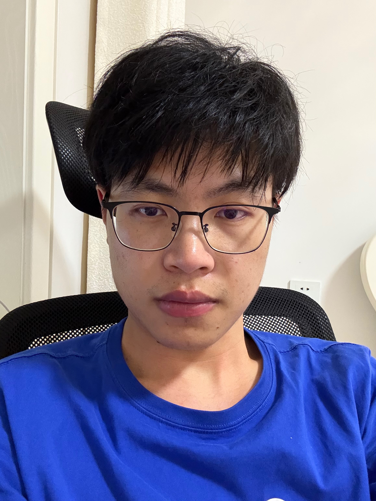
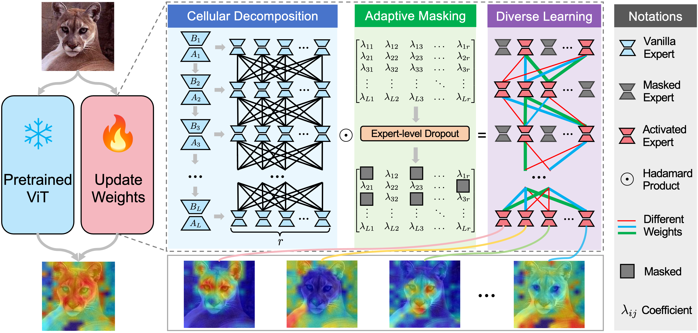
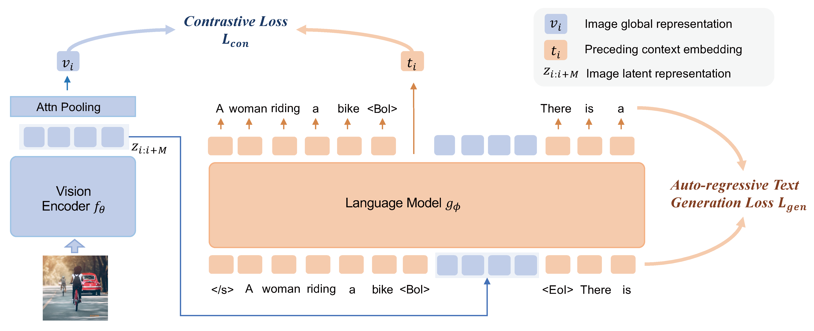

|  | Junjie Wang (王俊杰) |
Biography
I am a fourth-year undergraduate student at Beijing University of Posts and Telecommunications. During my undergraduate studies, I worked closely with Prof. Qicheng Lao.
Research Interest
My core research interest lies in developing truly intelligent systems through the application of machine learning theory. Recently, I focus on the following research topics:- Parameter-Efficient Fine-Tuning of Large Pre-trained Models
- Efficient Training of Large Language Models
News
- (2024-9.29) I will be enrolled in Peking University to pursue a doctorate degree in September 2025, with Prof. Zhouchen Lin as my supervisor!
- (2024-09.26) One paper is accepted in NeurIPS 2024!
Selected Publications
|  |
MLAE: Masked LoRA Experts for Visual Parameter-Efficient Fine-Tuning |
|  |
Vision Model Pre-training on Interleaved Image-Text Data via Latent Compression Learning |